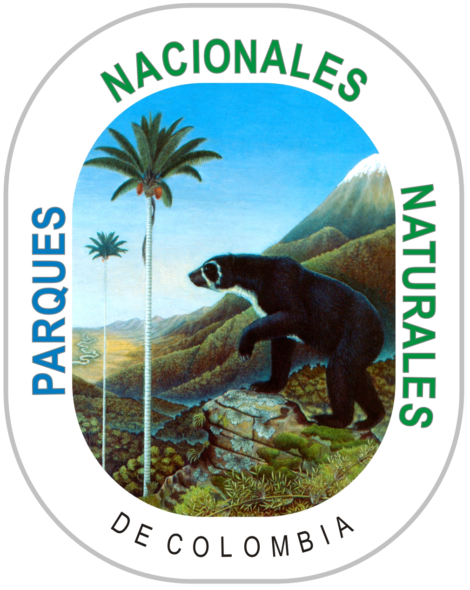
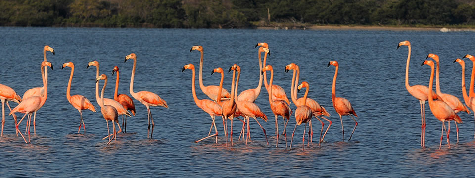

|  |  |
Estudiante: Carlos Moreno Ibarguen
Código: 201627339
Curso: Visual Anlalytics
2018 - Universidad de los Andes
Esta capa geográfica de información contiene los límites
territoriales establecidos por el Ministerio de Ambiente para los Parques Nacionales Naturales de Colombia la cual está disponible también desde http://sig.anla.gov.co:8083/ y ha sido enriquecida con información contenida en el documento "Actualización del cobro de los derechos de ingreso a los Parques Naturales Nacionales de Colombia 2015", con el fin que los usuarios conozcan información acerca de los parques y zonas protegidas del país.
Para mayor información relacionada con los atributos ingrese a:
https://ags.esri.co/server/rest/services/DA_DatosAbiertos/Parques_Nacionales_Naturales_de_Colombia/MapServer/0
Código disponible en Github: aquí
La presente visualización pretende mostrar la diversidad de opciones para escoger entre los parques naturales de Colombia como opción de ecoturismo, brindandonos informcaión de ubicación, tipo de parque, posibilidad de alojamiento entre otros.
Asi que
Atributos
| id | - Ordinal -secuencial |
| nombre | - Categorico |
| no_Res_Vi | - Categorico |
| area_Res | - Ordinal- secuencial |
| región | - Categorico |
| categoría | - Categorico |
| cos_Adulto | - Ordinal - secuencial |
| cos_Ninos | - Ordinal - secuencial |
| alojamiento | - Categorico |
| camping | - Categorico |
Idiom: Force-Directed Placement Marcas:
|